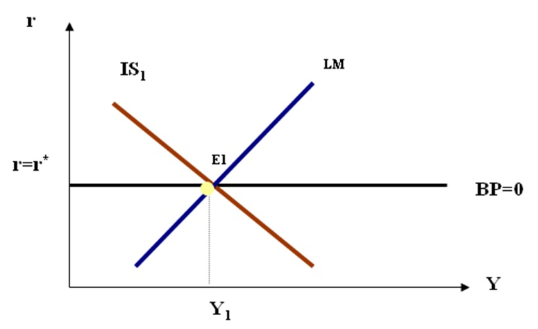

В работах Р. Манделла было показано, что использование инструментов кредитно-денежной и бюджетно-налоговой поли-тики позволяет одновременно достичь двух целей внешнего и внутреннего равновесия при условии, что модель допускает международное передвижение капитала.
Теоретический аспект проблемы внутреннего и внешнего равновесия часто рассматривается с использованием несколько модифицированной модели IS-LM путем добавления к ней третьей кривой ВР, показывающей равновесие платежного баланса. Эта модель строится для разных режимов валютных курсов - фиксированного и плавающего, а также для разной степени мобильности капитала. Малая открытая экономика с совершенной мобильностью капитала может анализироваться с помощью модели Манделла-Флеминга.

Подход к данной проблеме с точки зрения конкретных практических рекомендаций для экономической политики может быть и несколько иным (возможно, более упрощенным по сравнению с названными моделями).
Рассмотрим один из вариантов такого подхода, который довольно часто используется для решения задачи одновременного достижения внутреннего и внешнего баланса в условиях, когда правительство поддерживает фиксированный валютный курс.
Графическое представление данного подхода предполагает, что на осях координат непосредственно заданы два основных инструмента политики, используемые для решения двух поставленных задач (внутреннее и внешнее равновесие).